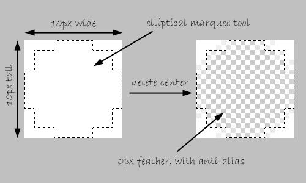

So here’s the scenario: I was tasked with replacing several dozen Photoshop-generated rounded buttons for a larger site with an HTML/CSS/JS equivalent. Prior, any time anyone wanted to change text on a button (and it seemed to happen often), a graphic designer had to fire up Photoshop, modify a file, adjust for size, output an image, and pass that file off to the person building the page. It was an involved process for something that should have been simple.
So let’s make it simple!
Right away I knew that I wanted to present as simple a solution for the developer as I could. I didn’t want to force them to use tons of extra markup in their HTML to pull this trick off. This was a piece of cake in modern browsers, as you’ll see in a moment. Unfortunately, this site also has a large IE user base, so I needed to account for less-modern browsers as well.
Border-Radius for Those Who Can
I decided I wanted to use border-radius for the rounded buttons for any browsers that could support it. I also decided that I wanted to create a single class, “button,” for any buttons, and it should work more-or-less the same on anchor tags, button tags, and “submit-type input tags.
In short, my HTML should be as simple as this:
<a href="link.html" class="button">A Button!</a>
<button class="button">Also A Button</button>
<input type="submit" class="button" value="Das Button" />
Input and button tags are admittedly tricky, as I’ve mentioned elsewhere. For this exercise we’ll ignore most of that and not worry about pixel-perfect results. Really, really close is good enough for me on this one.
My CSS for those happy modern browsers looks like this:
.button {
display: inline-block;
line-height: 1;
padding: 7px 10px;
text-decoration: none;
font-weight: bold;
color: #fff;
background-color: #39c;
-moz-border-radius: 5px;
-webkit-border-radius: 5px;
-khtml-border-radius: 5px;
border-radius: 5px;
}
input.button, button.button {
border: 0px none;
}
The display: inline-block makes our button behave like a block-level element (width, height, padding and the rest), while still staying “in line”. Our border-radius is set at the bottom: 5px, all around. We use vendor-prefixed rules first, for Mozilla, Webkit, and Khtml browsers. Then we finish with the “standard” border-radius rule, which is currently supported by Opera 10.5. We also have a separate rule to remove the default border on input and button tags. The rest is just text and color styling.
And just like that, we have nice rounded buttons that work in Safari, Chrome, Firefox and even the latest version of Opera! So who missed the party bus? Our old friend Internet Explorer, of course (and Opera browsers older than two months, as well). The client wasn’t comfortable giving those users square buttons, so I had to do something, and step one of that something is being able to tell which browsers can’t handle border-radius.
Sniff the Diff
This is where that test for border-radius support that I built last week suddenly comes in handy. I simply include a small jQuery function, run the test, and I can now tell whether or not the browser supports border-radius (vendor prefixed or otherwise). If you missed my article last week, I’d be sure to check that out before going any further.
With the help of my $.support.borderRadius object, I can now write some jQuery to treat those browsers that don’t support border-radius differently.
Modify the DOM
There’s no good way to fake rounded corners in Internet Explorer without resorting to images. However, that doesn’t mean we’re stuck with creating a one-size-fits-all button image and dealing with inflexibility. Really, the only part of the button we’re worried about changing is the borders. So let’s just worry about them!
We’re going to use jQuery to create a structure that looks like this:
<div class="buttonwrap">
<div class="tl"></div>
<div class="tr"></div>
<a href="link.html" class="button">Our Button</a>
<div class="bl"></div>
<div class="br"></div>
</div>
The buttonwrap div acts as a container for the rest of our elements, and will be relative positioned (but not moved) to turn it into a positioned parent, letting us move objects around inside it. The four corner divs are then absolutely positioned on top of our button and moved to the four corners (“tl” for top-left and so on).
Here’s the jQuery that gets it done:
jQuery(function() {
jQuery.support.borderRadius = false;
jQuery.each(['BorderRadius','MozBorderRadius','WebkitBorderRadius','OBorderRadius','KhtmlBorderRadius'], function() {
if(document.body.style[this] !== undefined) jQuery.support.borderRadius = true;
return (!jQuery.support.borderRadius);
});
});
$(function() {
if(!$.support.borderRadius) {
$('.button').each(function() {
$(this).wrap('<div class="buttonwrap"></div>')
.before('<div class="corner tl"></div><div class="corner tr"></div>')
.after('<div class="corner bl"></div><div class="corner br"></div>');
});
}
});
If the browser doesn’t support border-radius, we wrap our buttons in the buttonwrap div, then insert our four corner divs. Admittedly, we could have put all the corners in a row, but I like the idea of putting them in the same order they’ll appear visually. And sure, it’s five extra divs in our DOM… but they’re not in our HTML. I’m comfortable with that trade-off in this situation.
Now we need just two more pieces: the CSS to position everything properly, and the image that will let us fake our corners. Let’s deal with the image first.
One Image to Round Them All
You’ll be amazed at how simple this turned out to be (at least, I was!). We only need one teeny tiny image to round all four of our corners.
In my situation, I was dealing with dozens of buttons, some of different colors, but all on a white background. Because of that, I realized what I needed was a transparent PNG: white on the outside “background” area, and transparent on the inside to let my CSS button background color show through. And because my corners were all rounded the same amount, what I really needed in each corner was a quarter of a circle.
So what I did was open up Photoshop and create a 10px by 10px image. Then I gave it a white background, used the elliptical marquee tool to draw a circle in the center, and then deleted the center out (no feathering, but with anti-aliasing).

If you only had a single button color but multiple background colors, I’d still approach it the same basic way. I’d simply “select inverse” after creating my circle, delete the outside instead of the inside, and proceed the same.
Once I saved the image as a 24-bit PNG, my total file size was 182 bytes. If I were using a fancier image program like Fireworks, I probably could have gotten the image size even smaller. And admittedly, if you want the transparent PNG to work in IE6, you’ll need to use a PNG fix of some sort. But that’s outside the scope of this particular article. Google will assist in this one.
Now, using the power of CSS background positioning, I can show just a quarter of that image in each of my corners. Here’s my final IE-friendly CSS:
.buttonwrap {
display: inline-block;
position: relative;
zoom: 1;
*display: inline;
}
.corner {
position: absolute;
width: 5px;
height: 5px;
background: transparent url(images/corner.png) no-repeat 0 0;
}
.tl { top: 0; left: 0; background-position: left top; }
.tr { top: 0; right: 0; background-position: right top; }
.bl { bottom: 0; left: 0; background-position: left bottom; }
.br { bottom: 0; right: 0; background-position: right bottom; }
Note: The “zoom” and “*display” rules above are a necessary hack that causes IE7 to mimic the inline-block property (which it does not implement correctly).
So that’s it! Here’s a working example for you to try out.
Limitations
I’ll admit it: this solution isn’t perfect. Just pretty darn convenient for my situation. Some limitations include:
- IE6 requires a PNG fix, as I mentioned earlier.
- You’re stuck with either one button color, or one background color, per image. Additional classes and images could expand this, though.
- Corners are all the same radii.
- It’d be tougher (though not impossible) with a border on the button.
- It hasn’t made me coffee (yet).
However, I expect this will be useful to someone else. I’ve already found two uses for it since I wrote the original code!
In the right time I read
this article. Good work (saved)
Love this!
I specially appreciate the cross-browser (even the dreaded IE6) compliance. Too many poeple these days don’t bother about this anymore and just say “The hell with them!”.
Good work!
This isn’t simple. I don’t see a reason to use jquery. This can be done just with <a href=”#” rel=”nofollow”>Link</a> and with one image.
Hi Vel,
(I fixed your comment code so it shows up properly, so I removed the other comments).
You could use just one image, as long as you were okay with all of your buttons being exactly the same size. That wasn’t so in my case. Our buttons varied in both height and width, so I needed a flexible solution that could work in dozens of different places (including places that we hadn’t even thought up yet!).
Well, the code I’ve posted isn’t one that is shown in my comment :)
I’m talking about Sliding Door technique and here is tutorial how to make this with only one image http://kailoon.com/css-sliding-door-using-only-1-image/
Ah, thanks for the link, Vel.
That is a similar technique, but not quite the same concept. Dimitar’s technique would work for elements that expanded horizontally, but not vertically. And it still requires extra markup: you need an anchor tag and a span tag to pull it off.
I consider mine to be a nice alternative, because for 75% of the people that visit the site, they get rounded corners on all their buttons with zero images and no extra markup at all. But the other 25% still get rounded corners, with 1 (very, very small) image.
I’m not saying that the technique you linked to is bad: it looks very clean and well put together! It’s a different solution for a different problem. :)
What I wanted to say, is that I wont use jquery for something that can be done with css only, but you are right that your technique is good for buttons/links, which will go on 2+ rows ;-)
Your solution looks pretty good. However, I think it is more efficient to simply create a button class using CSS. This way it is super easy to change the text. And than you can always make a new button img for it….Or at least this is how I always do it. :)
ex:
.btn{ display: block; width: 150px; height: 50px; line-height: 50px; background; image(btn.png); text-align: center; padding: 0px 5px; text-shadow: 0px 1px #000; color: #FFF;}
Click Here
Oh yea, I forgot the div’s wont show up. Haha
Perhaps I don’t understand what you’re getting at, WPExplorer… my solution also uses a single class of .button. At least, it does for everything not-IE.
It looks like your one-class-fits-all idea would work fine as long as you don’t need buttons of different sizes, which is sort of my entire point. Let’s say you have one button that says “Go” and another that says “Click Here to Access Your Free Content”, and you want to use the same button class for each. Now you’re stuck either making your button absurdly huge for “Go” or editing your button text on the longer one to fit your background image width.
My whole goal was to create something that allowed for massive button-size flexibility, that offered rounded corners, that worked cross-browser, and that kept my source clean.
I checked it with IE7, it does not show rounded corners on the top right and bottom right. Demo on IE6 does not work either.
Pingback: Bookmarks for April 27th from 14:42 to 14:42 | Travis' Blog
Thanks for pointing that out, Shin. I’ve added a tiny hack to the CSS to account for IE7′s problems. I’d forgotten that IE7 doesn’t play well with inline-block. Luckily, there’s a two-line workaround!
I don’t have a copy of IE6 installed here. Can anyone test the demo against IE6 and let me know of any problems?
Even simpler solution for IE, which should help complete your solution without the need for any javascript at all.
http://aext.net/2010/04/css3-ie-support/
Excellent find, Francis! Thanks for sharing. I’m going to download this and play around.
If use jQuery, I would like to use a plugin to make rounded corners without images. This’s better because we don’t have to concern about PNG fix for IE6. Btw, your solution is also a good one.
this is wonderful tutorial .. i read it 3 times and get a fantastic results and sure i put a
copy of this lesson on my here http://www.learnanyway.blogspot.com
I just found your site today, and it now has the #2 spot in my list of CSS resources (an A-Z list of all the CSS properties is first). You cut a lot of time out of my learning curve.
Thank you.
As for IE users, I say give them the sharp corner if they can’t take a radius. It’s still better than a sharp stick in the eye. ;) Ow.
Pingback: 20 Awesome jQuery Enhanced CSS Button Techniques - Speckyboy Design Magazine
Pingback: jQuery Enhanced CSS Button Techniques
IE6 PNG fix is NOT compatible with CSS background positioning.
Pingback: ” 20+jQuery增强型CSS按钮– HTML5,CSS3,WEB前端设计开发资讯站
really a nice stuff for the beginners, thanks very much for the very good posts on CSS
a very good innovation ^_^ nice
Wow ,ive found at last.thanks for sharing
Pingback: Complete Toolbox: 55 CSS Menu And Button Coding Tutorials » abdie.web.id
Pingback: Complete Toolbox: 55 CSS Menu And Button Coding Tutorials | CG Stream
Pingback: Complete Toolbox: 55 CSS Menu And Button Coding Tutorials
Pingback: Complete Toolbox: 55 CSS Menu And Button Coding Tutorials | TechFleck
Pingback: 55 CSS Menu And Button Coding Tutorials « FED视野
Just happily subscribed to your feed. Good articles with gr8 site.
Hi, I’m beginning to learn css program. Write your thank you letter will help me a lot of work.
Pingback: 40 jQuery and CSS3 Tutorials and Techniques - Speckyboy Design Magazine
Pingback: 40 jQuery and CSS3 Tutorials and Techniques « Vision
Nice article.I have to work with this tutorial
Pingback: 20 Must Learn Button Tutorials in jQuery and CSS | blueblots.com
Pingback: The Ultimate Roundup of 55+ CSS3 Tutorials
your codes will not work in IE..kindly check and update to us..
Pingback: The Ultimate Roundup of 55+ CSS3 Tutorials | luLUXE
Pingback: The Ultimate Roundup of 55+ CSS3 Tutorials « qeqnes | Designing. jQuery, Ajax, PHP, MySQL and Templates
Pingback: 40 jQuery and CSS3 Tutorials and Techniques « Nap5teR
Pingback: 20+jQuery增强型CSS按钮 | 俊顶视觉设计网 - 视觉创意,前端开发,web标准设计,高端网站,网页设计教程,网站策划,网站推广,网络营销。
Pingback: Css ile buton yapma | web tasarım ve internet magazin
I use the same thing, but don’t rely on images, I use http://css3pie.com/ to achieve rounded corners, graident and drop shadow. Works great with ie 6-8 and for the most part requires no extra mark up to make IE play nice…
Pingback: The Ultimate Roundup of 55+ CSS3 Tutorials | LionWebMedia.com
This is a really helpful article. I like all the examples and code sets you give. Thanks for sharing.
Great work, bookmarked!
Pingback: Css ile buton yapma @ İnternet Magazin
Pingback: 70 Must See CSS3 Tips, Tricks And Tutorials
Pingback: 70 Must See CSS3 Tips, Tricks And Tutorials « Spartan Pixel | News and much more